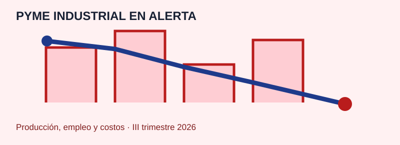

Mapa interactivo
Consumo eléctrico industrial y comercial per cápita
Consumo por departamento de Entre Ríos, con datos de población del Censo 2022 y promedio provincial.
Abrir mapa →
Estadísticas Entre RíosJoBen · datos para decidir
Datos Entre Ríos
Entre Ríos no es una isla. Somos parte de Argentina, parte de Latinoamérica. Concepción del Uruguay fue protagonista en la conformación de lo que hoy es la nación. Esta es nuestra obligación: mantener viva esa lucha que nuestra historia nos pide. Por eso este portal busca entender qué nos pasa a nivel humano y territorial, para ordenar las variables económicas y sociales con la responsabilidad que heredamos.
Consumo por departamento de Entre Ríos, con datos de población del Censo 2022 y promedio provincial.
Abrir mapa →
Intensidad económica y exportadora por habitante, con categoría y complejo agroindustrial principal.
Abrir mapa →
Densidad de empleo privado registrado, empleo público y ratio entre ambos por departamento.
Abrir mapa →
Evolución reciente de empleadores activos, impacto en las Mipymes y señales para el trabajo formal.
Leer informe →
Presentación del GIDIC sobre tecnología, innovación y competitividad desde la UTN FRCU.
Leer informe →Análisis sobre dinámicas territoriales, económicas y sociales de la provincia de Buenos Aires.
Descargar PDF →
Panorama nacional de producción, empleo, costos y tensiones financieras según el Observatorio PyME.
Leer informe →
Población, densidad, crecimiento intercensal y cabecera principal por departamento.
Abrir mapa →
Lectura territorial del Censo 2022 sobre concentración urbana, densidad y dinámica intercensal.
Leer informe →
Porcentaje de analfabetismo, personas afectadas y población evaluada por departamento.
Abrir mapa →
Matrícula, establecimientos, carreras superiores y alumnos por establecimiento.
Abrir mapa →Concepción del Uruguay, Caseros, Juárez. Fueron protagonistas de la construcción de Argentina. Esa lucha nos atraviesa. Mantenerla viva no es nostalgia: es entender que los datos territoriales cuentan historias de resistencia, de integración, de futuro.
Mapas e informes que visibilizan cómo vive la gente, dónde trabaja, qué produce. No para contemplar, sino para decidir con fundamento. Entre Ríos en su contexto: Mesopotamia que es parte, provincia que es responsable.